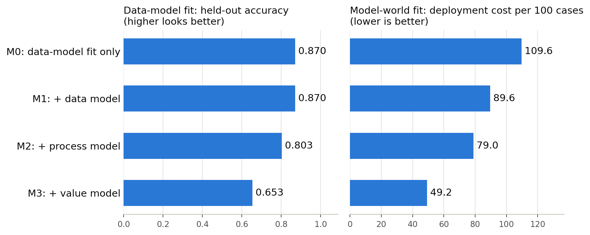

flowchart TD
PF["Problem Framing and Metrics"]
DC["Data Collection and Labeling"]
EDA["Exploratory Analysis"]
FR["Feature and Representation"]
MD["Model Development"]
EV["Evaluation and Validation"]
DEP["Deployment"]
MON["Monitoring and Drift Detection"]
PF --> DC
DC --> EDA
EDA --> FR
FR --> MD
MD --> EV
EV --> DEP
DEP --> MON
DC -.->|revise framing| PF
EDA -.->|revise data| DC
FR -.->|revise framing| PF
EV -.->|revise framing| PF
MON -.->|revise framing| PF
6 The AI Development Lifecycle
6.1 Introduction
Building a machine learning system is rarely a single act of training a model. It is a sustained engineering and organizational process that begins long before any algorithm is selected and continues long after a model first reaches production. This process is what practitioners call the AI development lifecycle: the sequence of activities that turns a business or scientific question into a working, monitored, and continuously improved intelligent system.
Newcomers often imagine that the hard part of applied machine learning is the modeling, the choice of architecture, the hyperparameter search, the clever loss function. The empirical record says otherwise. Industry surveys and post-mortems of failed deployments consistently point to two earlier stages as the dominant sources of failure: the framing of the problem and the data that feeds it. A model can be technically excellent and still useless if it optimizes the wrong objective, or if the data it learned from does not resemble the data it will eventually see. This chapter therefore treats the lifecycle as a whole, with deliberate emphasis on the stages that matter most and fail most often.
A second theme runs throughout: the lifecycle is iterative, not linear. The clean left-to-right diagrams in textbooks are pedagogical conveniences. Real projects loop backward constantly. Evaluation reveals a labeling error that sends the team back to data collection. Monitoring detects drift that reopens the problem-framing conversation. Understanding these feedback loops is the difference between a project that converges and one that thrashes.
6.2 A Map of the Lifecycle
Before examining each stage, it helps to see the whole. The diagram below shows the canonical stages and, crucially, the backward arrows that make the process iterative rather than a one-way pipeline.
Notice that almost every stage can send work back to an earlier one. The arrows from monitoring back to problem framing and from evaluation back to data are not exotic edge cases. They are the normal rhythm of mature practice.
6.3 Problem Framing and Success Metrics
6.3.1 Translating a Goal into a Learnable Task
The first and most consequential stage is also the least technical. Someone, a clinician, a product manager, a policy analyst, has a goal stated in human terms: reduce hospital readmissions, surface relevant search results, detect fraudulent transactions. The task of framing is to convert this goal into a machine learning problem with a precise input, output, and objective.
This translation is where many projects quietly go wrong. Consider a request to “predict which customers will churn.” Framing forces uncomfortable but essential questions. What counts as churn, and over what horizon? Is the prediction actionable, that is, can the business actually intervene? Should the model output a probability, a ranked list, or a binary flag? A model that predicts churn perfectly but too late to retain anyone has solved the wrong problem.
6.3.2 Choosing Metrics That Reflect Value
Every model optimizes something, and what it optimizes is almost never identical to what the organization values. Bridging that gap requires distinguishing two kinds of metrics. Offline metrics (accuracy, area under the ROC curve, F1, mean average precision) are computed on held-out data and guide model selection. Online or business metrics (revenue, retention, click-through, clinician trust) are what actually matter and are measured in the real system, often through controlled experiments.
The danger is optimizing an offline proxy that diverges from the online goal. Accuracy is famously misleading under class imbalance: a fraud detector that labels everything “not fraud” can be 99.9 percent accurate and worthless. To see why, fix notation around the confusion matrix, with \(TP\), \(FP\), \(TN\), and \(FN\) counting true positives, false positives, true negatives, and false negatives. Accuracy is
\[ \text{Accuracy} = \frac{TP + TN}{TP + TN + FP + FN}. \]
When positives are rare, the \(TN\) term dominates and swamps any information about the minority class. Two metrics that ignore \(TN\) are more honest under imbalance,
\[ \text{Precision} = \frac{TP}{TP + FP}, \qquad \text{Recall} = \frac{TP}{TP + FN}, \]
and their harmonic mean, the \(F_1\) score, balances the two,
\[ F_1 = \frac{2 \cdot \text{Precision} \cdot \text{Recall}}{\text{Precision} + \text{Recall}}. \]
The harmonic mean is deliberate: it is dominated by the smaller of the two terms, so a model cannot earn a high \(F_1\) by sacrificing precision for recall or the reverse. When false positives and false negatives carry different costs \(c_{FP}\) and \(c_{FN}\), the relevant objective is not any of these symmetric scores but expected cost, \(c_{FP} \cdot FP + c_{FN} \cdot FN\), and the decision threshold should be set to minimize it rather than fixed at 0.5. The weighted \(F_\beta\) score generalizes \(F_1\) by tilting toward recall (\(\beta > 1\)) or precision (\(\beta < 1\)) to encode that asymmetry.
Good framing selects metrics that are robust to the data’s structure, weighs the asymmetric costs of false positives against false negatives, and, where stakes are high, considers fairness and calibration alongside raw discrimination. Goodhart’s law looms over this entire stage: when a measure becomes a target, it ceases to be a good measure, so teams must watch for the model gaming its proxy.
6.4 Data Collection and Labeling
6.4.1 Why Data Dominates Outcomes
If problem framing sets the direction, data determines how far the project can travel. The prevailing wisdom that more data beats cleverer algorithms is only half right. What beats cleverer algorithms is better data: representative, correctly labeled, and matched to deployment conditions. The movement often called data-centric AI, associated with Andrew Ng among others, argues that for many mature problems the highest-leverage work is improving data quality rather than tuning models.
6.4.2 Sourcing and Representativeness
Data may come from logs, sensors, surveys, public corpora, or third-party vendors. The central risk at this stage is sampling bias: the collected data does not represent the population the model will serve. A facial analysis system trained mostly on one demographic will fail on others. A demand forecaster trained on pre-pandemic data will mislead during a shock. Representativeness is not a property you can recover later through clever modeling; it must be designed into collection.
6.4.3 Labeling and Annotation
Supervised learning needs labels, and labels are expensive, noisy, and political. Who decides what a “toxic” comment is? How do you reconcile disagreeing annotators? Practical labeling programs invest in clear annotation guidelines, measure inter-annotator agreement, and treat ambiguous cases as signal about the problem rather than noise to be averaged away. A standard agreement statistic is Cohen’s kappa, which corrects raw agreement for the agreement expected by chance,
\[ \kappa = \frac{p_o - p_e}{1 - p_e}, \]
where \(p_o\) is the observed proportion of cases two annotators agree on and \(p_e\) is the proportion expected if they labeled independently at their respective marginal rates. A \(\kappa\) of \(1\) is perfect agreement, \(0\) is chance-level, and negative values indicate systematic disagreement. The chance correction matters: when one class is dominant, two annotators can agree on ninety percent of cases purely by both defaulting to the majority label, so a high raw agreement with \(\kappa\) near zero is a warning that the annotation task is ill-defined rather than a sign of reliable labels. Label leakage, where information unavailable at prediction time sneaks into the features through the labeling process, is a subtle and recurring defect that inflates offline scores and collapses in production. Techniques such as weak supervision and programmatic labeling, exemplified by systems like Snorkel, let teams scale annotation while keeping humans focused on the hard cases.
6.5 Exploratory Data Analysis
Before modeling, the data must be understood. Exploratory data analysis (EDA), a discipline traced to John Tukey, is the practice of summarizing, visualizing, and interrogating data to form hypotheses and catch problems. EDA reveals missing values, outliers, skewed distributions, unexpected correlations, and the telltale signatures of data-collection errors.
This stage is diagnostic. A column that is empty for ninety percent of records, a timestamp in the future, a target that correlates suspiciously perfectly with one feature (a hint of leakage): these are the findings that send the team back to earlier stages. Skipping EDA to rush into modeling is a false economy, because the model will faithfully learn whatever pathologies the data contains. Good EDA also informs the next stage by suggesting which transformations and representations the data demands.
6.6 Feature and Representation Choices
How data is represented to a model often matters more than which model is chosen. In classical machine learning this stage is feature engineering: constructing informative inputs such as ratios, aggregations, time-since-last-event, or domain-specific encodings. Thoughtful features can let a simple, interpretable model outperform a complex one.
The deep learning era shifted the balance toward representation learning, in which the model learns its own features from raw inputs such as pixels, audio, or text. This does not eliminate the stage so much as relocate it: choices about tokenization, embeddings, normalization, and architecture are representation choices. A critical and easily overlooked concern is training-serving skew, where the feature computation in training differs from that at serving time. A feature scaled with statistics from the training set but recomputed differently in production will silently degrade predictions. Feature stores emerged in part to enforce consistency between the two environments.
6.7 Model Development
Only now, well into the lifecycle, does modeling proper begin. The guiding principle here is parsimony: start with a strong, simple baseline (a linear model, a gradient-boosted tree, a heuristic rule) before reaching for anything elaborate. A baseline establishes whether the problem is learnable at all and gives every later, more complex model something to beat.
Model development is itself a loop of training, examining errors, and adjusting. Practitioners manage the bias-variance tradeoff: underfitting models that are too simple to capture the signal, overfitting models that memorize noise. Regularization, cross-validation, and disciplined hyperparameter search are the tools of this stage. Because experiments multiply quickly, experiment tracking, recording each run’s data version, code, parameters, and metrics, is essential for reproducibility. The reproducibility crisis that has touched machine learning research stems largely from neglecting this discipline. Importantly, modeling is the stage practitioners most enjoy and most overinvest in, which is precisely why this chapter places it in proportion: it is one stage among many, and rarely the one that decides success.
6.8 Evaluation and Validation
6.8.1 Honest Estimates of Generalization
Evaluation asks whether the model will perform on data it has never seen. The cardinal rule is strict separation of training, validation, and test data, with the test set touched only once, at the end. Violations of this discipline, tuning on the test set, leaking future information, evaluating on data that overlaps with training, produce optimistic numbers that evaporate in deployment.
Special care is needed for structured data. With time series, random shuffling leaks the future into the past, so evaluation must respect temporal order. With grouped data (multiple records per patient, per user), splits must keep groups intact to avoid leakage. The validation scheme must mirror how the model will actually be used.
6.8.2 Beyond a Single Aggregate Number
A single headline metric hides as much as it reveals. Mature evaluation slices performance across subgroups to expose disparities, examines the confusion matrix to understand error types, checks calibration so that predicted probabilities mean what they claim, and performs error analysis on individual failures to find patterns. Increasingly, evaluation also includes robustness checks against distribution shift and adversarial inputs, and fairness audits across protected groups. The goal is not a number to celebrate but a defensible judgment about whether the system is safe and useful to deploy.
6.9 Deployment
Deployment moves a validated model from a notebook into a system that serves real predictions under real constraints. This is a software and operations problem as much as a machine learning one, and it is where many academically successful models stall.
Deployment patterns vary by need. Batch prediction scores data on a schedule and stores results. Online serving exposes the model behind an API for low-latency requests. Edge deployment pushes the model onto devices for privacy or connectivity reasons. Each pattern imposes constraints on latency, throughput, and resource use that may force a return to model development, for instance to distill or quantize a model that is too slow. Safe rollout practices, shadow deployment (running the new model alongside the old without acting on it), canary releases, and A/B tests, let teams measure real online metrics and contain the blast radius of failures. Reproducibility and versioning of data, code, and model artifacts make rollbacks possible when something goes wrong.
6.10 Monitoring and Drift Detection
A deployed model is not finished; it is now exposed to a world that changes. Monitoring is the continuous observation of a live system to ensure it remains healthy. It spans operational signals (latency, error rates, throughput) and, harder but more important, predictive quality.
The central long-run threat is drift. The two principal kinds are cleanly separated by writing the joint distribution of inputs \(x\) and target \(y\) as \(P(x, y) = P(y \mid x)\,P(x)\). Data drift, also called covariate shift, is a change in \(P(x)\) while \(P(y \mid x)\) stays fixed: a new customer segment, a new sensor, a seasonal effect. Concept drift is a change in \(P(y \mid x)\), the input-output relationship itself: fraud tactics evolve, user preferences shift, an economic regime breaks. The distinction is operational, not academic. Covariate shift can sometimes be corrected by reweighting training examples toward the new input distribution, whereas concept drift means the old labels no longer describe the world and fresh labeled data is required (reference 9). Drift is insidious because the model keeps producing confident predictions while silently growing less correct.
Detecting drift is complicated by delayed labels. When ground truth arrives slowly (did this loan default? did this patient recover?), teams cannot wait for it to notice a problem. They therefore monitor proxies: statistical distance between recent and reference input distributions, shifts in prediction distributions, and any early-arriving outcome signals. A widely used proxy is the population stability index, which compares a recent batch against a reference distribution after binning a feature or score into \(B\) buckets,
\[ \text{PSI} = \sum_{i=1}^{B} (a_i - e_i) \, \ln\!\frac{a_i}{e_i}, \]
where \(e_i\) and \(a_i\) are the expected (reference) and actual (recent) proportions in bucket \(i\). The PSI is a symmetrized relative-entropy quantity; it is small when the two distributions match and grows as they diverge. A common rule of thumb treats \(\text{PSI} < 0.1\) as no material shift, \(0.1\) to \(0.25\) as moderate, and above \(0.25\) as a significant shift worth investigating, though sensible thresholds depend on the application. The Kolmogorov-Smirnov test offers a complementary, binning-free check on continuous features by measuring the largest gap between two empirical cumulative distribution functions. When drift crosses a threshold, the monitoring stage triggers a return to data collection and retraining, closing the largest loop in the lifecycle.
6.11 Iteration
The arrows pointing backward in the diagram of Section 2 are the heart of the matter. Iteration is not failure; it is how the system improves. Each pass through the loop should be cheap enough to run often, which is why automation of data pipelines, retraining, evaluation, and deployment pays for itself. The objective is a tight feedback loop in which production reality continuously informs the next version of the model, and in which the team’s understanding of the problem itself matures over time. Systems decay if left static; the only stable state is continuous, disciplined iteration.
6.12 A Worked Example: Churn Prediction End to End
To make the loop concrete, trace a single project through the stages and watch where it loops backward. A subscription business wants to “reduce churn.”
Problem framing turns the goal into a task. The team defines churn as failure to renew within thirty days of the contract anniversary, fixes the prediction horizon at sixty days before that anniversary (early enough for the retention team to act), and chooses a calibrated probability as the output so that a budgeted number of save offers can be sent to the highest-risk accounts. Because the retention team can contact only the top few percent of accounts each week, the team selects precision at the top of the ranked list, formally precision@k, as the primary offline metric, with the online metric being incremental retention measured by a holdout experiment.
Data collection assembles per-account monthly snapshots of usage, support tickets, and billing. Exploratory analysis flags a feature, “account closed reason,” that is almost perfectly predictive of churn. This is label leakage: the field is populated only after an account has already churned, so it would be unavailable at the sixty-day prediction point. The discovery sends the team back to data collection to recompute every feature strictly as of the prediction time, a temporal cutoff that defines a clean point-in-time training set.
Model development starts with a gradient-boosted tree baseline, a mature open-source choice that handles mixed tabular features and missing values well. Evaluation uses a time-based split, training on earlier cohorts and testing on later ones, because a random split would let the model peek at the future and inflate precision@k. Calibration is checked so the predicted probabilities can be trusted for budgeting. The model is shipped behind a batch scoring job that writes weekly risk scores, and a small randomized holdout of high-risk accounts receives no offer so the team can measure the true incremental effect.
Monitoring then earns its keep. Three months later, the population stability index on a key usage feature crosses 0.25 after a product redesign changed how usage is logged. The input distribution has shifted (data drift), and the team retrains on fresh point-in-time data. Notice that every backward arrow in the map of Section 2 appeared in this single project: exploratory analysis sent work back to data, and monitoring sent work back to collection and retraining. The modeling stage, by contrast, was the smoothest part.
6.13 Frameworks for the Lifecycle
Several formal frameworks describe this process, each emphasizing different concerns. Understanding their lineage clarifies why modern practice looks the way it does.
6.13.1 CRISP-DM
The Cross-Industry Standard Process for Data Mining (CRISP-DM), published in 1999, was the first widely adopted lifecycle model. Its six phases (business understanding, data understanding, data preparation, modeling, evaluation, deployment) map closely onto the stages above, and its insistence on starting from business understanding remains sound. CRISP-DM explicitly depicts iteration with arrows between phases. Its limitation is that it predates the realities of continuously running, learning systems: it treats deployment as nearly the final step and says little about monitoring, drift, or automated retraining.
6.13.2 The ML Lifecycle
What is loosely called “the ML lifecycle” extends CRISP-DM to reflect that machine learning models are living artifacts. It adds explicit emphasis on data versioning, experiment tracking, model validation, and, decisively, the monitoring and feedback loop after deployment. Where CRISP-DM ends with a deployed model, the ML lifecycle treats deployment as the beginning of an operational phase that feeds back into the next iteration.
6.13.3 MLOps
MLOps applies the principles of DevOps, automation, continuous integration and continuous delivery, infrastructure as code, observability, to machine learning systems. It is less a description of stages than a discipline for executing them reliably and repeatedly at scale. MLOps contributes continuous training pipelines, automated testing of data and models, feature stores to prevent training-serving skew, model registries, and production monitoring. Google’s influential analysis of technical debt in machine learning systems made the case that the model code is a small fraction of a real system, surrounded by configuration, data dependencies, and serving infrastructure that dominate maintenance cost. MLOps is the engineering response to that observation. The three frameworks are best understood as complementary layers: CRISP-DM names the phases, the ML lifecycle adds the post-deployment loop, and MLOps provides the automation and tooling that make the loop sustainable.
6.14 Where Projects Actually Fail
It is worth stating plainly, because it contradicts the instincts of many newcomers. The most common causes of failure in applied machine learning are not in the modeling stage. They cluster at the beginning and at the data.
Projects fail because the problem was framed to optimize a metric that did not correspond to real value. They fail because the training data was unrepresentative, mislabeled, or contaminated by leakage that inflated offline scores. They fail because no one monitored for drift and the model silently decayed. They fail organizationally when a brilliant prototype never crosses the gap into a maintainable production system. Surveys of the field repeatedly report that a large share of models built never reach production at all, and of those that do, many degrade for want of monitoring. The modeling stage, by contrast, is comparatively well-tooled and forgiving: a competent baseline often captures most of the available value.
The practical implication for a graduate practitioner is a reallocation of attention. Spend disproportionate effort on framing the problem correctly and on the data, the collection, the labeling, the exploratory understanding, the representation. Treat modeling as important but bounded. And build, from the start, the monitoring and iteration machinery that lets the system survive contact with a changing world. The lifecycle is a loop, and the loop never truly closes.
6.14.1 Recurring Pitfalls and How to Avoid Them
A short field guide to the failures that recur most often, each tied to the stage where it originates.
- Optimizing a proxy metric that diverges from value. Validate that movement in the offline metric actually moves the online metric, ideally through a controlled experiment, before trusting it.
- Label leakage. Audit every feature with the question, would this value be known at prediction time? Reconstruct features at a strict point-in-time cutoff rather than from the latest snapshot.
- Unrepresentative data. Compare the collection distribution against the deployment population on key strata before modeling; representativeness cannot be recovered later by clever modeling.
- Optimistic evaluation. Touch the test set once, respect temporal order for time series, and keep groups intact for grouped data so that records from the same entity never straddle the train and test split.
- Training-serving skew. Compute features through shared code or a feature store so that training and serving use identical transformations.
- Silent drift. Monitor input and prediction distributions with statistics such as PSI or the Kolmogorov-Smirnov test from day one, because delayed labels mean you cannot wait for accuracy to confirm the problem.
- Over-investing in modeling. A strong, simple baseline usually captures most of the available value; complexity should have to earn its place against it.
- Mistaking data-model fit for model-world fit. A held-out score drawn from the training source measures only how well the model fits that source. Write down what the fields mean, how the data are produced, and what each error costs (Section 14.2), and test the deployment assumptions those documents expose before trusting the score.
6.14.2 From Data-Model Fit to Model-World Fit
Many of the failures listed above can be read through a distinction drawn by Castellanos, Tremblay, Lukyanenko, Parsons, and Storey (2026) (reference 11). Machine learning systems that perform well in controlled settings fail in deployment, they argue, because training optimizes data-model fit, statistical performance on the training data, whereas deployment demands model-world fit, behavior that preserves domain semantics and contextual understanding. Their Machine Learning Model-World Fit framework describes how domain knowledge can be integrated into the development process through external knowledge representations, such as data models, value models, process models, and domain ontologies, and argues that these representations help overcome three kinds of knowledge deficiency in AI systems: know-what, know-how, and know-why. The authors illustrate the framework with child welfare placement, a domain where contextual understanding is critical and statistical accuracy is an insufficient evaluation criterion, and they present it as a research roadmap for work at the intersection of machine learning, design science, and knowledge representation.
The distinction can be made precise with the tools of this chapter. Let \(f\) be a trained model, \(\ell\) the loss it was trained and validated with, and \(y\) the label recorded in the data. Let \(y^\star\) be the outcome the domain actually cares about, of which \(y\) may be only a proxy, and let \(L\) be the cost the domain attaches to each kind of decision error. Write \(P_S\) for the source distribution that produced the training and held-out data and \(P_T\) for the distribution the deployed model meets. Four quantities are in play:
\[ \begin{aligned} \widehat{R}_S(f) &= \frac{1}{m}\sum_{j=1}^{m} \ell\big(f(x_j), y_j\big), \qquad (x_j, y_j) \overset{\text{iid}}{\sim} P_S \text{ held out}, \\ R_S(f) &= \mathbb{E}_{(x, y) \sim P_S}\, \ell\big(f(x), y\big), \\ R_T(f) &= \mathbb{E}_{(x, y) \sim P_T}\, \ell\big(f(x), y\big), \\ R_W(f) &= \mathbb{E}_{(x, y^\star) \sim P_T}\, L\big(f(x), y^\star\big). \end{aligned} \]
The first is data-model fit as a held-out evaluation reports it. The last is model-world fit: the cost the deployed model actually imposes, measured against the outcome that matters. Adding and subtracting \(R_S(f)\) and \(R_T(f)\) gives an exact identity,
\[ \begin{aligned} R_W(f) - \widehat{R}_S(f) ={}& \underbrace{\big[R_S(f) - \widehat{R}_S(f)\big]}_{\text{(i) estimation gap}} + \underbrace{\big[R_T(f) - R_S(f)\big]}_{\text{(ii) shift gap}} \\ &+ \underbrace{\big[R_W(f) - R_T(f)\big]}_{\text{(iii) construct gap}}. \end{aligned} \tag{6.1}\]
Each term answers to a different kind of evidence.
Term (i) is the only one a held-out test set measures. For a loss bounded in \([0, 1]\), Hoeffding’s inequality gives, with probability at least \(1 - \delta\) over the draw of the \(m\) held-out points,
\[ \big|R_S(f) - \widehat{R}_S(f)\big| \le \sqrt{\frac{\ln(2/\delta)}{2m}}, \]
so around ten thousand held-out examples pin data-model fit down to about a percentage point. This is the discipline of Section 8, and it is necessary, but it says nothing about terms (ii) and (iii).
Term (ii) is the dataset shift of Section 10. Its size is bounded by how far the joint distribution moves. Write \(p_S\) and \(p_T\) for the densities of \((x, y)\) and let \(A = \{(x, y) : p_T > p_S\}\). Because \(0 \le \ell \le 1\),
\[ \begin{aligned} R_T(f) - R_S(f) &= \int \ell\big(f(x), y\big)\,\big(p_T - p_S\big)\,d(x, y) \\ &\le \int_{A} \ell\big(f(x), y\big)\,\big(p_T - p_S\big)\,d(x, y) \\ &\le \int_{A} \big(p_T - p_S\big)\,d(x, y) \\ &= \tfrac{1}{2}\int \big|p_T - p_S\big|\,d(x, y) = \mathrm{TV}(P_S, P_T). \end{aligned} \]
The first inequality drops the region outside \(A\), where \(p_T \le p_S\) and \(\ell \ge 0\) make the integrand nonpositive. The second uses \(\ell \le 1\). The last line uses \(\int (p_T - p_S) = 0\), so the positive and negative parts have equal mass. The same argument with the roles of \(S\) and \(T\) swapped bounds \(R_S - R_T\), hence \(|R_T(f) - R_S(f)| \le \mathrm{TV}(P_S, P_T)\). The bound is over the joint distribution, including \(P(y \mid x)\), while the monitoring statistics of Section 10 see only marginals of \(x\). A relationship between a feature and the label can break completely while every input histogram stays put. Which relationships are stable mechanisms and which are artifacts of how the data happened to be produced is not recorded in the training sample; it is knowledge about the process.
Term (iii) cannot be estimated from labeled data at all when only \(y\) is recorded, because \(y^\star\) never appears in it, and it depends on \(L\), which is a statement about values rather than about data. Only knowledge of what the label means and of what errors cost can close it.
The three deficiencies in the framework line up naturally with these terms. The pairing of each deficiency with a representation and a failure mode in the table below is our lifecycle reading of the framework, not a mapping taken from the paper.
| Deficiency | Question it answers | Representation that carries it | Silent failure it prevents |
|---|---|---|---|
| Know-what | What do the entities, fields, codes, units, and labels mean? | Data model, domain ontology | A field changes its unit or meaning while keeping its name |
| Know-how | How is the data produced, and when is each field recorded relative to the outcome and the prediction? | Process model | A feature written downstream of the outcome looks predictive in every held-out split |
| Know-why | Which outcomes matter, and what does each kind of error cost? | Value model | Selecting and thresholding by accuracy when errors have unequal costs |
flowchart TB
H["Held-out score on source data"]
G1["Gap i, estimation: closed by test set discipline"]
S["Expected loss on the source"]
G2["Gap ii, shift: closed by know-what and know-how"]
T["Expected loss in deployment on the proxy label"]
G3["Gap iii, construct and cost: closed by know-what and know-why"]
W["Decision cost in the world"]
H --> G1
G1 --> S
S --> G2
G2 --> T
T --> G3
G3 --> W
The value model has a closed-form consequence that Section 3.2 alluded to. Suppose the model outputs a calibrated probability \(p = P(y^\star = 1 \mid x)\), a missed positive costs \(c_{FN}\), and a false alarm costs \(c_{FP}\). Flagging the case has expected cost \((1 - p)\,c_{FP}\); not flagging it has expected cost \(p\,c_{FN}\). Flagging is the better decision exactly when
\[ \begin{aligned} p\,c_{FN} > (1 - p)\,c_{FP} &\iff p\,(c_{FN} + c_{FP}) > c_{FP} \\ &\iff p > t^\star = \frac{c_{FP}}{c_{FP} + c_{FN}}. \end{aligned} \tag{6.2}\]
Accuracy is the special case \(c_{FN} = c_{FP}\), which gives \(t^\star = 1/2\). Choosing a model by accuracy is therefore not a neutral act: it silently adopts the value model in which a missed high-risk case and a false alarm cost the same.
6.14.2.1 A worked demonstration
The simulation below plants each deficiency once in a stylized, fully synthetic case-triage problem. It is not a model of child welfare or of any real agency; the point is the mechanics. A latent risk factor and a case duration drive the outcome \(y^\star\), which here is also the recorded label, so that term (iii) enters only through the cost \(L\). The deployment period differs from the source period in two ways a domain expert would know about and the training data cannot reveal:
- Know-what. A new case system records
durationin years in the same column that used to hold months. - Know-how. In the source period, the
notesfield counted follow-up documentation written after the outcome was known, so it tracks the outcome. At deployment the field is filled before any outcome exists. We model this by generatingnotesfrom a randomly permuted copy of the outcome, which preserves its marginal distribution exactly while erasing its link to \(y^\star\).
The value model sets \(c_{FN} = 5\) and \(c_{FP} = 1\), so Equation 6.2 gives \(t^\star = 1/6\). Four variants add one representation at a time: M0 fits all three features and thresholds at 0.5; M1 adds the data model, converting deployment years back to months; M2 adds the process model, dropping notes because it is recorded after the outcome; M3 adds the value model, thresholding at \(t^\star\).
Code
import numpy as np
import pandas as pd
import sympy as sp
import matplotlib.pyplot as plt
from sklearn.linear_model import LogisticRegression
rng = np.random.default_rng(2026)
C_FN, C_FP = 5.0, 1.0 # value model: a missed high-risk case costs five false alarms
def simulate(n, world=False):
# Stylized, synthetic case-triage data; not a model of any real agency.
risk = rng.normal(size=n) # genuine risk factor
dur = rng.normal(size=n) # latent case duration, standardized
p = 1 / (1 + np.exp(-(-1.6 + 1.2 * risk + 0.8 * dur)))
y = (rng.random(n) < p).astype(int) # the outcome the domain cares about
months = 24 + 12 * dur
if not world:
duration = months # legacy system records months
notes = 1.5 * y + rng.normal(size=n) # follow-up notes written after the outcome
else:
duration = months / 12 # new system records years in the same column
notes = 1.5 * rng.permutation(y) + rng.normal(size=n) # same marginal, no link to y
return pd.DataFrame({"risk": risk, "duration": duration, "notes": notes, "y": y})
def psi(ref, new, bins=10):
# Population stability index from Section 10, with decile bins of the reference.
edges = np.quantile(ref, np.linspace(0, 1, bins + 1))
edges[0], edges[-1] = -np.inf, np.inf
e = np.clip(np.histogram(ref, edges)[0] / len(ref), 1e-6, None)
a = np.clip(np.histogram(new, edges)[0] / len(new), 1e-6, None)
return float(np.sum((a - e) * np.log(a / e)))
src = simulate(40_000)
train, test = src.iloc[:28_000], src.iloc[28_000:]
world = simulate(40_000, world=True)
print(f"base rate: source {src['y'].mean():.3f}, deployment {world['y'].mean():.3f}")
for col in ["risk", "duration", "notes"]:
print(f"PSI({col:8s}) source vs deployment = {psi(src[col], world[col]):7.4f}")base rate: source 0.240, deployment 0.237
PSI(risk ) source vs deployment = 0.0001
PSI(duration) source vs deployment = 12.4339
PSI(notes ) source vs deployment = 0.0006Code
def harmonize(df):
# Data model (know-what): the column is a duration in months, so convert years back.
return df.assign(duration=df["duration"] * 12)
ALL, DK = ["risk", "duration", "notes"], ["risk", "duration"]
fit_all = LogisticRegression().fit(train[ALL], train["y"])
fit_dk = LogisticRegression().fit(train[DK], train["y"])
t_star = C_FP / (C_FP + C_FN) # cost-optimal threshold from the value model
variants = [
("M0: data-model fit only", fit_all, ALL, False, 0.5),
("M1: + data model", fit_all, ALL, True, 0.5),
("M2: + process model", fit_dk, DK, True, 0.5),
("M3: + value model", fit_dk, DK, True, t_star),
]
def evaluate(model, cols, df, t):
yhat = model.predict_proba(df[cols])[:, 1] >= t
y = df["y"].to_numpy() == 1
cost = C_FN * (~yhat & y) + C_FP * (yhat & ~y)
return np.mean(yhat == y), np.mean(yhat[y]), 100 * np.mean(cost)
rows = []
for name, model, cols, use_dm, t in variants:
acc_s, _, _ = evaluate(model, cols, test, t)
acc_w, rec_w, cost_w = evaluate(model, cols, harmonize(world) if use_dm else world, t)
rows.append({"variant": name, "threshold": round(t, 3),
"held-out accuracy": round(acc_s, 3),
"deployment accuracy": round(acc_w, 3),
"deployment recall": round(rec_w, 3),
"deployment cost per 100 cases": round(cost_w, 1)})
results = pd.DataFrame(rows).set_index("variant")
print(f"coefficient on notes in M0: {fit_all.coef_[0][2]:.2f}")
resultscoefficient on notes in M0: 1.52| threshold | held-out accuracy | deployment accuracy | deployment recall | deployment cost per 100 cases | |
|---|---|---|---|---|---|
| variant | |||||
| M0: data-model fit only | 0.500 | 0.870 | 0.760 | 0.095 | 109.6 |
| M1: + data model | 0.500 | 0.870 | 0.744 | 0.325 | 89.6 |
| M2: + process model | 0.500 | 0.803 | 0.805 | 0.371 | 79.0 |
| M3: + value model | 0.167 | 0.653 | 0.654 | 0.845 | 49.2 |
# Illustrative: the same experiment in base Julia, with logistic regression fit by Newton's method.
using Random, Statistics, LinearAlgebra
const C_FN, C_FP = 5.0, 1.0
rng = MersenneTwister(2026)
σ(z) = 1 / (1 + exp(-z))
function simulate(n; world = false)
risk, dur = randn(rng, n), randn(rng, n)
y = rand(rng, n) .< σ.(-1.6 .+ 1.2 .* risk .+ 0.8 .* dur)
months = 24 .+ 12 .* dur
duration = world ? months ./ 12 : months
notes = 1.5 .* (world ? shuffle(rng, y) : y) .+ randn(rng, n)
(; risk, duration, notes, y)
end
design(d, cols) = hcat(ones(length(d.y)), (getproperty(d, c) for c in cols)...)
harmonize(d) = merge(d, (; duration = d.duration .* 12))
function fit_logistic(X, y; iters = 25)
β = zeros(size(X, 2))
for _ in 1:iters
p = σ.(X * β)
β += (X' * ((p .* (1 .- p)) .* X)) \ (X' * (y .- p))
end
β
end
function evaluate(β, X, y, t)
ŷ = σ.(X * β) .>= t
cost = C_FN .* (.!ŷ .& y) .+ C_FP .* (ŷ .& .!y)
(mean(ŷ .== y), mean(ŷ[y]), 100 * mean(cost))
end
src, world = simulate(40_000), simulate(40_000; world = true)
train, test = map(v -> v[1:28_000], src), map(v -> v[28_001:end], src)
ALL, DK = (:risk, :duration, :notes), (:risk, :duration)
β_all = fit_logistic(design(train, ALL), train.y)
β_dk = fit_logistic(design(train, DK), train.y)
t_star = C_FP / (C_FP + C_FN)
variants = [("M0: data-model fit only", β_all, ALL, false, 0.5),
("M1: + data model", β_all, ALL, true, 0.5),
("M2: + process model", β_dk, DK, true, 0.5),
("M3: + value model", β_dk, DK, true, t_star)]
for (name, β, cols, use_dm, t) in variants
w = use_dm ? harmonize(world) : world
acc_s, _, _ = evaluate(β, design(test, cols), test.y, t)
acc_w, rec_w, cost_w = evaluate(β, design(w, cols), w.y, t)
println(rpad(name, 26), "held-out acc ", round(acc_s; digits = 3),
" deploy acc ", round(acc_w; digits = 3),
" recall ", round(rec_w; digits = 3),
" cost/100 ", round(cost_w; digits = 1))
end// Illustrative: Cargo dependencies rand = "0.8" and rand_distr = "0.4".
// Logistic regression is fit by Newton's method with a small dense solver.
use rand::{rngs::StdRng, seq::SliceRandom, Rng, SeedableRng};
use rand_distr::StandardNormal;
const C_FN: f64 = 5.0;
const C_FP: f64 = 1.0;
struct Data { risk: Vec<f64>, duration: Vec<f64>, notes: Vec<f64>, y: Vec<bool> }
fn sigmoid(z: f64) -> f64 { 1.0 / (1.0 + (-z).exp()) }
fn simulate(rng: &mut StdRng, n: usize, world: bool) -> Data {
let risk: Vec<f64> = (0..n).map(|_| rng.sample(StandardNormal)).collect();
let dur: Vec<f64> = (0..n).map(|_| rng.sample(StandardNormal)).collect();
let y: Vec<bool> = (0..n)
.map(|i| rng.gen::<f64>() < sigmoid(-1.6 + 1.2 * risk[i] + 0.8 * dur[i]))
.collect();
let mut y_notes = y.clone();
if world { y_notes.shuffle(rng); } // same marginal, no link to the outcome
let duration: Vec<f64> = dur.iter()
.map(|d| { let m = 24.0 + 12.0 * d; if world { m / 12.0 } else { m } })
.collect();
let notes: Vec<f64> = y_notes.iter()
.map(|&b| 1.5 * f64::from(u8::from(b)) + rng.sample::<f64, _>(StandardNormal))
.collect();
Data { risk, duration, notes, y }
}
fn row(d: &Data, i: usize, use_notes: bool, harmonize: bool) -> Vec<f64> {
let dur = if harmonize { d.duration[i] * 12.0 } else { d.duration[i] };
let mut r = vec![1.0, d.risk[i], dur];
if use_notes { r.push(d.notes[i]); }
r
}
fn solve(mut a: Vec<Vec<f64>>, mut b: Vec<f64>) -> Vec<f64> {
let k = b.len();
for c in 0..k {
let p = (c..k).max_by(|&i, &j| a[i][c].abs().total_cmp(&a[j][c].abs())).unwrap();
a.swap(c, p);
b.swap(c, p);
let pivot = a[c].clone();
for r in c + 1..k {
let f = a[r][c] / pivot[c];
for j in c..k { a[r][j] -= f * pivot[j]; }
b[r] -= f * b[c];
}
}
let mut x = vec![0.0; k];
for c in (0..k).rev() {
let s: f64 = (c + 1..k).map(|j| a[c][j] * x[j]).sum();
x[c] = (b[c] - s) / a[c][c];
}
x
}
fn dot(x: &[f64], beta: &[f64]) -> f64 { x.iter().zip(beta).map(|(a, b)| a * b).sum() }
fn fit_logistic(x: &[Vec<f64>], y: &[bool]) -> Vec<f64> {
let k = x[0].len();
let mut beta = vec![0.0; k];
for _ in 0..25 {
let (mut h, mut g) = (vec![vec![0.0; k]; k], vec![0.0; k]);
for (xi, &yi) in x.iter().zip(y) {
let p = sigmoid(dot(xi, &beta));
for a in 0..k {
g[a] += xi[a] * (f64::from(u8::from(yi)) - p);
for b in 0..k { h[a][b] += p * (1.0 - p) * xi[a] * xi[b]; }
}
}
let step = solve(h, g);
for a in 0..k { beta[a] += step[a]; }
}
beta
}
fn evaluate(beta: &[f64], x: &[Vec<f64>], y: &[bool], t: f64) -> (f64, f64, f64) {
let (mut correct, mut tp, mut pos, mut cost) = (0.0, 0.0, 0.0, 0.0);
for (xi, &yi) in x.iter().zip(y) {
let flag = sigmoid(dot(xi, beta)) >= t;
if flag == yi { correct += 1.0; }
if yi {
pos += 1.0;
if flag { tp += 1.0 } else { cost += C_FN }
} else if flag {
cost += C_FP;
}
}
let n = y.len() as f64;
(correct / n, tp / pos, 100.0 * cost / n)
}
fn main() {
let mut rng = StdRng::seed_from_u64(2026);
let src = simulate(&mut rng, 40_000, false);
let world = simulate(&mut rng, 40_000, true);
let (n_train, t_star) = (28_000, C_FP / (C_FP + C_FN));
let matrix = |d: &Data, idx: std::ops::Range<usize>, notes: bool, harm: bool| -> Vec<Vec<f64>> {
idx.map(|i| row(d, i, notes, harm)).collect()
};
let fit_all = fit_logistic(&matrix(&src, 0..n_train, true, false), &src.y[..n_train]);
let fit_dk = fit_logistic(&matrix(&src, 0..n_train, false, false), &src.y[..n_train]);
let variants = [
("M0: data-model fit only", &fit_all, true, false, 0.5),
("M1: + data model", &fit_all, true, true, 0.5),
("M2: + process model", &fit_dk, false, true, 0.5),
("M3: + value model", &fit_dk, false, true, t_star),
];
for (name, beta, notes, harm, t) in variants {
let (acc_s, _, _) =
evaluate(beta, &matrix(&src, n_train..40_000, notes, false), &src.y[n_train..], t);
let (acc_w, rec_w, cost_w) =
evaluate(beta, &matrix(&world, 0..40_000, notes, harm), &world.y, t);
println!("{name:<26}held-out acc {acc_s:.3} deploy acc {acc_w:.3} recall {rec_w:.3} cost/100 {cost_w:.1}");
}
}Code
fig, axes = plt.subplots(1, 2, figsize=(9, 3.8), sharey=True)
labels = results.index[::-1]
panels = [
("held-out accuracy", "Data-model fit: held-out accuracy\n(higher looks better)", "{:.3f}"),
("deployment cost per 100 cases", "Model-world fit: deployment cost per 100 cases\n(lower is better)", "{:.1f}"),
]
for ax, (col, title, fmt) in zip(axes, panels):
vals = results[col][::-1]
ax.barh(labels, vals, height=0.55, color="#2a78d6")
for yi, v in enumerate(vals):
ax.text(v, yi, " " + fmt.format(v), va="center", fontsize=11, color="#0b0b0b")
ax.set_title(title, fontsize=11, loc="left", color="#0b0b0b")
ax.set_xlim(0, vals.max() * 1.25)
ax.grid(axis="x", color="#e4e3df", linewidth=0.8)
ax.set_axisbelow(True)
for side in ["top", "right", "left"]:
ax.spines[side].set_visible(False)
ax.spines["bottom"].set_color("#c3c2b7")
ax.tick_params(axis="y", length=0, colors="#0b0b0b", labelsize=11)
ax.tick_params(axis="x", colors="#52514e", labelsize=9)
plt.tight_layout()
plt.show()
The held-out ranking is reversed, rung for rung, by the deployment ranking (Figure 6.1). Each step that improves model-world fit leaves data-model fit unchanged or makes it worse, which is exactly why a team that selects on held-out accuracy alone would never take it. Reading the table row by row:
- M0 collapses quietly. Its deployment accuracy of 0.760 looks like a moderate decline from 0.870, but it is almost exactly one minus the base rate. Reading years as months makes every case look short, so the model nearly stops flagging anyone: recall falls to 0.095. Accuracy hides the collapse, and the unequal costs expose it.
- Monitoring sees one failure and misses the other. The population stability index on
durationis about 12, far above the 0.25 alarm level of Section 10, so input monitoring catches the unit change. What it cannot supply is the fix. The data model turns the alarm into a one-line conversion without waiting months for labels to arrive. The PSI onnotes, by contrast, is essentially zero, because only \(P(y \mid \text{notes})\) changed. This is the gap the total variation bound warned about: a joint shift invisible to every marginal check. - The process model costs held-out accuracy and buys deployment performance. With units repaired, M1’s accuracy actually falls (0.744), because the large coefficient on
notesnow injects noise. Only knowing how the field is produced, that it is written after the outcome, justifies dropping it. Doing so lowers held-out accuracy from 0.870 to 0.803, since the held-out split shares the leak, and raises deployment accuracy to 0.805. This is the partial cousin of the leakage in Section 12: not a near-perfect predictor that announces itself, but a modestly useful one that survives every random split. - The value model looks worst on the leaderboard and is best in the world. Thresholding at \(t^\star = 1/6\) drops held-out accuracy to 0.653, the lowest of the four, while recall rises from 0.371 to 0.845 and deployment cost falls from 79.0 to 49.2 per 100 cases, less than half of M0’s.
The final cell checks the two pieces of mathematics the demonstration relies on: the cost-optimal threshold of Equation 6.2, solved symbolically, and the Hoeffding half-width for the 12,000 held-out cases used here.
Code
p, c_fn, c_fp = sp.symbols("p c_FN c_FP", positive=True)
t_sym = sp.solve(sp.Eq(p * c_fn, (1 - p) * c_fp), p)[0]
print("indifference threshold:", t_sym)
print("equals c_FP/(c_FP + c_FN):", sp.simplify(t_sym - c_fp / (c_fp + c_fn)) == 0)
print("at c_FN = 5, c_FP = 1:", t_sym.subs({c_fn: 5, c_fp: 1}))
print("accuracy as a value model (c_FN = c_FP):", t_sym.subs(c_fn, c_fp))
m, delta = len(test), 0.05
half_width = np.sqrt(np.log(2 / delta) / (2 * m))
acc_m0 = results.loc["M0: data-model fit only"]
print(f"Hoeffding half-width for m = {m}, delta = {delta}: {half_width:.4f}")
print(f"M0 held-out minus deployment accuracy: "
f"{acc_m0['held-out accuracy'] - acc_m0['deployment accuracy']:.3f}")indifference threshold: c_FP/(c_FN + c_FP)
equals c_FP/(c_FP + c_FN): True
at c_FN = 5, c_FP = 1: 1/6
accuracy as a value model (c_FN = c_FP): 1/2
Hoeffding half-width for m = 12000, delta = 0.05: 0.0124
M0 held-out minus deployment accuracy: 0.110The held-out estimate of source accuracy is good to about \(\pm 0.012\), yet M0 loses 0.11 of accuracy in deployment and far more in cost. The estimate is precise about the wrong quantity: term (i) of Equation 6.1 is small and well measured, and the damage lives entirely in terms (ii) and (iii).
The practical lesson for the lifecycle is that the three representations are cheap, versionable artifacts that slot into stages the lifecycle already has. Write the data model during data collection: field definitions, units, code lists, label definitions, and a domain ontology where one exists. Sketch the process model during problem framing and feature selection: for every field, who records it, when relative to the outcome and to the moment of prediction, and which workflow changes would alter it. Elicit the value model when choosing metrics: the cost of each kind of error and who bears it. None of them requires new modeling machinery, and each one targets a term of Equation 6.1 that no held-out split can see. In a domain such as the child welfare placement case Castellanos and colleagues analyze, where statistical accuracy is an insufficient evaluation criterion, these artifacts are not documentation overhead; they are where model-world fit is decided.
6.15 References
Wirth, R., and Hipp, J. (2000). CRISP-DM: Towards a Standard Process Model for Data Mining. Proceedings of the 4th International Conference on the Practical Applications of Knowledge Discovery and Data Mining. https://www.cs.unibo.it/~danilo.montesi/CBD/Beatriz/10.1.1.198.5133.pdf
Sculley, D., Holt, G., Golovin, D., Davydov, E., Phillips, T., Ebner, D., Chaudhary, V., Young, M., Crespo, J., and Dennison, D. (2015). Hidden Technical Debt in Machine Learning Systems. Advances in Neural Information Processing Systems (NeurIPS) 28. https://papers.nips.cc/paper/2015/hash/86df7dcfd896fcaf2674f757a2463eba-Abstract.html
Ng, A. (2021). A Chat with Andrew on MLOps: From Model-centric to Data-centric AI. DeepLearning.AI. https://www.deeplearning.ai/the-batch/the-data-centric-ai-movement/
Tukey, J. W. (1977). Exploratory Data Analysis. Addison-Wesley.
Ratner, A., Bach, S. H., Ehrenberg, H., Fries, J., Wu, S., and Re, C. (2017). Snorkel: Rapid Training Data Creation with Weak Supervision. Proceedings of the VLDB Endowment, 11(3). https://www.vldb.org/pvldb/vol11/p269-ratner.pdf
Google Cloud. (2020). MLOps: Continuous Delivery and Automation Pipelines in Machine Learning. https://cloud.google.com/architecture/mlops-continuous-delivery-and-automation-pipelines-in-machine-learning
Breck, E., Cai, S., Nielsen, E., Salib, M., and Sculley, D. (2017). The ML Test Score: A Rubric for ML Production Readiness and Technical Debt Reduction. IEEE International Conference on Big Data. https://research.google/pubs/pub46555/
Amershi, S., Begel, A., Bird, C., DeLine, R., Gall, H., Kamar, E., Nagappan, N., Nushi, B., and Zimmermann, T. (2019). Software Engineering for Machine Learning: A Case Study. IEEE/ACM 41st International Conference on Software Engineering (ICSE-SEIP). https://www.microsoft.com/en-us/research/publication/software-engineering-for-machine-learning-a-case-study/
Gama, J., Zliobaite, I., Bifet, A., Pechenizkiy, M., and Bouchachia, A. (2014). A Survey on Concept Drift Adaptation. ACM Computing Surveys, 46(4). https://dl.acm.org/doi/10.1145/2523813
Paleyes, A., Urma, R.-G., and Lawrence, N. D. (2022). Challenges in Deploying Machine Learning: A Survey of Case Studies. ACM Computing Surveys, 55(6). https://dl.acm.org/doi/10.1145/3533378
Castellanos, A., Tremblay, M. C., Lukyanenko, R., Parsons, J., and Storey, V. C. (2026). From Data-Model Fit to Model-World Fit: A Framework for Integrating Domain Knowledge into Artificial Intelligence. Information Systems Research, articles in advance. https://doi.org/10.1287/isre.2023.0031